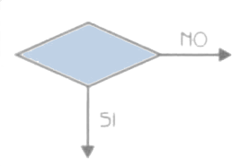

Diagramas de Flujo y N-S
Diagramas de Flujo y N-S
Created by edme88
Diagramas de Flujo
¿Qué les parece que es un diagrama de flujo?
¿Cómo lo definirían con sus palabras?
Diagrama de Flujo
Representa la esquematización gráfica de un algoritmo.
Muestra gráficamente los pasos o procesos a seguir para alcanzar la solución de un problema.
A partir del mismo se escribe un programa en algún lenguaje de programación.
Diagrama de Flujo
- Se utilizan símbolos (cajas) estándar que representan los pasos del algoritmo
- Unidos por flechas: líneas de flujo
- Los símbolos están normalizados
Simbolos de Diagrama de Flujo
| Simbolo | Explicación |

| Marcar el inicio y el fin del diagrama de flujo. |
| Introducir los datos de entrada. Expresa lectura. | |
| Expresa procesos: asignaciones, operaciones aritméticas, cambios de valor de celdas en memoria, etc |
Simbolos de Diagrama de Flujo
| Simbolo | Explicación |
|  | Condición, dependiendo del resultado de la evaluación de la misma se sigue por una de las ramas o caminos alternativos. Se utiliza para if, while, do while. |
 |
Selectiva doble si entonces/sino. Condición. El resultado es verdadero se continúa por el camino de la Izquerda, y si es falso por el camino de la derecha. Se utiliza para if else. |
Simbolos de Diagrama de Flujo
| Simbolo | Explicación |
| Representar una decisión múltiple. En su Interior se almacena un selector, y dependiendo del valor
de dicho selector se sigue por una de las ramas o caminos alternativos. Se utiliza para switch (case) |
Simbolos de Diagrama de Flujo
| Simbolo | Explicación |
 |
Representar la Impresión de un resultado. Expresa escritura. |
| Expresar la dirección del flujo del diagrama | |
 |
Expresar conexión dentro de una misma página |
Simbolos de Diagrama de Flujo
| Simbolo | Explicación |
| Expresar conexión entre páginas diferentes | |
| Expresar un módulo de un problema. Para continuar con el flujo normal del diagrama debemos primero resolver el subproblema que enuncia en su Interior |
Diagrama de Flujo Básico
Diagrama de Flujo Básico

Reglas de DF
- Debe tener un inicio y un fin.
- Las líneas utilizadas para indicar la dirección del flujo del diagrama deben ser rectas, verticales y horizontales. (no inclinadas)
- Todas las líneas utilizadas para indicar la dirección del flujo del diagrama deben estar conectadas. La conexión puede ser a un símbolo que exprese lectura, proceso, decisión, impresión, conexión o fin de diagrama.
Reglas de DF
- El diagrama de flujo debe ser construido de arriba hacia abajo (top-down) y de izquierda a derecha (right to left).
- La notación utilizada en el diagrama de flujo debe ser independiente del lenguaje de programación.
- Es conveniente cuando realizamos una tarea compleja poner comentarios que expresen o ayuden a entender lo que hicimos.
Reglas de DF
- Si el diagrama de flujo requiriera más de una hoja para su construcción, debemos utilizar los conectores adecuados y enumerar las páginas convenientemente.
- No puede llegar más de una línea a un símbolo.
Diagramas N-S
Como el diagrama de flujo, pero se omiten líneas de flujo y las cajas son contiguas.
También conocido como diagrama de chaplin.

¿Dudas, Preguntas, Comentarios?